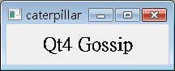
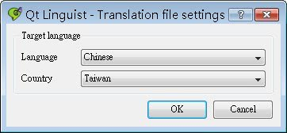
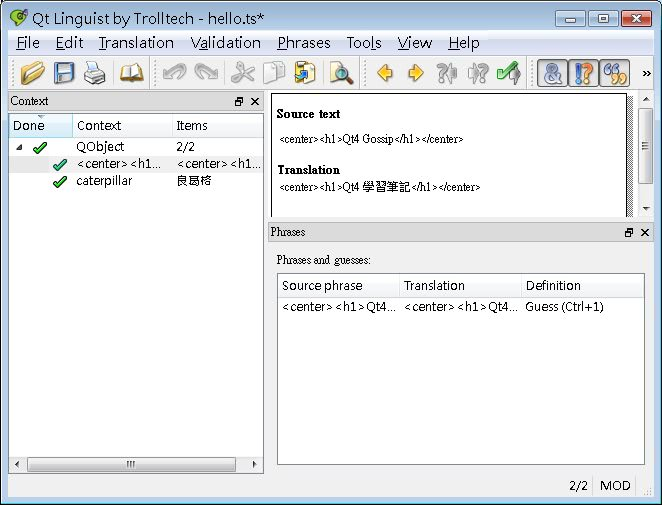
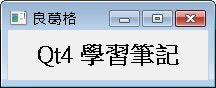

您可以在應用程式中的一些文字位置撰寫預設語系文字，例如英語系文字，若要改變整個應用程式中的文字為另一個語系的文字，再提供qm檔來進行翻譯，要擁有這個功能，首要條件是在您的應用程式中：
- 所有要翻譯的文字，都必須撰寫在QObject::tr()函式之中
- 實例化QTranslator，載入.qm檔案
- 為QApplication安裝QTranslator
以 簡 單的顯示中文（使用 Unicode 轉換） 為例，示範如何讓它擁有置換.qm檔即可翻譯應用程式：
- main.cpp
#include <QApplication>
#include <QLabel>
#include <QTranslator>
int main(int argc, char *argv[]) {
QApplication app(argc, argv);
QTranslator translator;
translator.load("hello");
app.installTranslator(&translator);
QLabel *label = new QLabel;
label->setText(
QObject::tr("<center><h1>Qt4 Gossip</h1></center>"));
label->setWindowTitle(
QObject::tr("caterpillar"));
label->resize(200, 50);
label->show();
return app.exec();
}要翻譯的文字，一定要直接撰寫在tr()之中，tr()之中不得使用變數，因為稍後使用lupdate工具程式處理時，會無法找出需要翻譯的文字，例如以下的寫法就不行：
QString name = "caterpillar";
label->setWindowTitle(name);
label->setWindowTitle(name);
QTranslator的load()方法設置為hello，這預設會去尋找hello.qm檔，檔案中包括要進行翻譯的文字，上面的應用程式已經可以執行，在不提供.qm檔案時，預設就是顯示原始程式碼中的文字：

接著，確定在您的.pro檔案中，設置原始檔案名稱與即將產生的.ts檔案名稱：
SOURCES += main.cpp
TRANSLATIONS += hello.ts
TRANSLATIONS += hello.ts
如此就可以直接使用Qt附的lupdate工具程式來自動產生.ts檔案，指令為：
lupdate -verbose yourApp.pro
.ts檔案的格式內容為XML檔案，您可以直接編輯它：
<?xml version="1.0" encoding="utf-8"?>
<!DOCTYPE TS><TS version="1.1">
<context>
<name>QObject</name>
<message>
<location filename="main.cpp" line="15"/>
<source><center><h1>Qt4 Gossip</h1></center></source>
<translation type="unfinished"></translation>
</message>
<message>
<location filename="main.cpp" line="17"/>
<source>caterpillar</source>
<translation type="unfinished"></translation>
</message>
</context>
</TS>
<!DOCTYPE TS><TS version="1.1">
<context>
<name>QObject</name>
<message>
<location filename="main.cpp" line="15"/>
<source><center><h1>Qt4 Gossip</h1></center></source>
<translation type="unfinished"></translation>
</message>
<message>
<location filename="main.cpp" line="17"/>
<source>caterpillar</source>
<translation type="unfinished"></translation>
</message>
</context>
</TS>
但更簡單的方法是使用Qt附的linguist：
linguist hello.ts
這會出現linguist視窗程式，若要中文，可以執行「Edit/Translation File Settings」，設定為中文語系編輯：

接著可以在右上窗格進行翻譯的文字編輯，例如：

修改所有要翻譯的文字之後進行儲存，原本的.ts檔將修改為如下：
<?xml version="1.0" encoding="utf-8"?>
<!DOCTYPE TS><TS version="1.1" language="zh_TW">
<defaultcodec></defaultcodec>
<context>
<name>QObject</name>
<message>
<location filename="main.cpp" line="15"/>
<source><center><h1>Qt4 Gossip</h1></center></source>
<translation><center><h1>Qt4 學習筆記</h1></center></translation>
</message>
<message>
<location filename="main.cpp" line="17"/>
<source>caterpillar</source>
<translation>良葛格</translation>
</message>
</context>
</TS>
接著使用Qt的lrelease工具程式，將.ts檔轉換為.qm檔：
lrelease hello.ts
接著啟動應用程式，QTranslator可以載入hello.qm檔的內容，並將所有tr()中的文字作置換，畫面如下：
